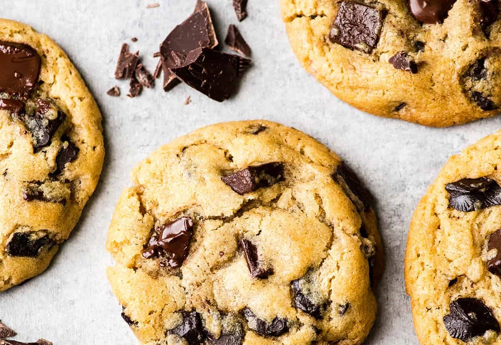

Easy Chocolate Chip Cookies
Learn how to make classic chocolate chip cookies and enjoy them still warm from the oven. Perfect for a bake sale or with your afternoon tea.
Preparation Time
- Total: Approximately 30 mins
- Preparation: 20 mins
- Cooking: 12 mins
Ingredients
- 120g butter
- 75g sugar
- 1 medium egg
- 1 tsp vanilla extract
- 180g plain flour
- ½ tsp bicarbonate of soda
- 150g dark chocolate
Instruction
- Heat oven to 180C/160C fan/gas 4 and line two baking sheets with parchment.
- Cream the butter and sugars together until very light and fluffy, then beat in the egg and vanilla.
- Once combined, stir in the flour, bicarb, chocolate and ¼ tsp salt.
- Scoop 10 large tbsps of the mixture onto the trays, leaving enough space between each to allow for spreading.
- Bake for 10-12 mins or until firm at the edges but still soft in the middle – they will harden a little as they cool.
- Leave to cool on the tray for a few mins before eating warm, or transfer to a wire rack to cool completely. Will keep for three days in an airtight container.
Nutrition
The table below shows nutritional values per serving without the additional fillings
- Calories:
- Carbs:
- Protein:
- Fat: